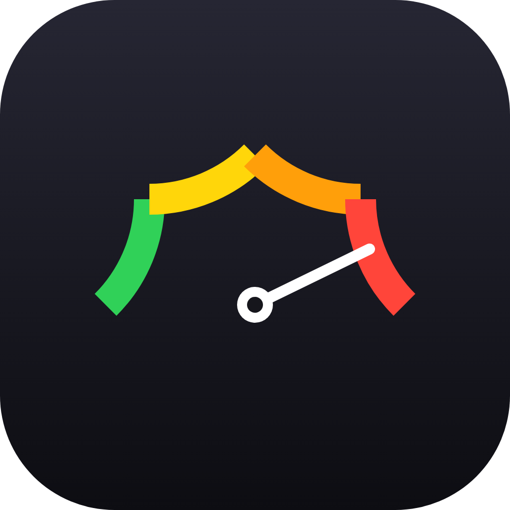
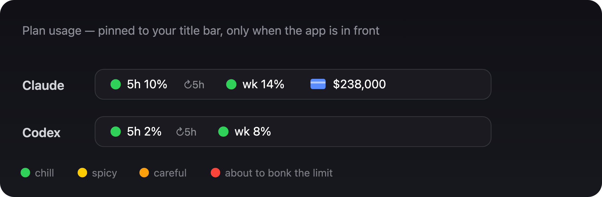

Your Claude & Codex plan usage, pinned right onto the app window — so you never guess whether the next message bonks the limit.

Live usage for both rolling windows, color-coded green → red as you climb.
A little ↻ tells you exactly when your session frees up again.
Sits in the title bar and tracks the app across Spaces and monitors.
One bar each — plus Claude's extra-usage spend. Drag to place, it remembers.
One line in Terminal. macOS only. Need Python? brew install python.
curl -fsSL https://raw.githubusercontent.com/niyubuilds/did-i-hit-the-limit/main/install.sh | bash
Prefer to read the code first? Clone it from GitHub and run ./install.sh. First launch asks your keychain once, then never again.
Yes — and you can verify it. It reads the same usage the apps already show you, using your own logged-in session, and talks only to Anthropic's and OpenAI's own servers. No accounts, no telemetry, no third parties. It's a few hundred lines of readable Python, and your keychain key stays on your Mac.
This. It shows your 5-hour and weekly usage right on the Claude window.
The ↻ countdown on the bar tells you.
Yep — same bar, its own window.
It uses the apps' internal usage endpoints, so it may need an update if they change. It's read-only — it never sends a message or spends a cent.